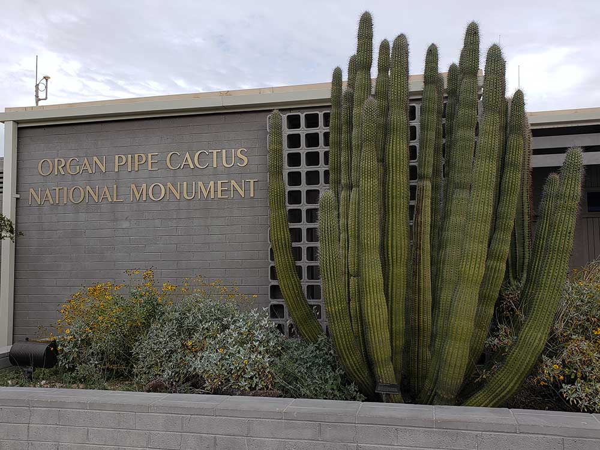
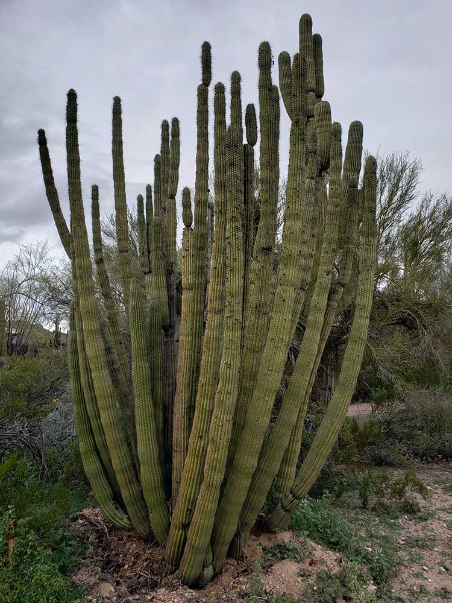
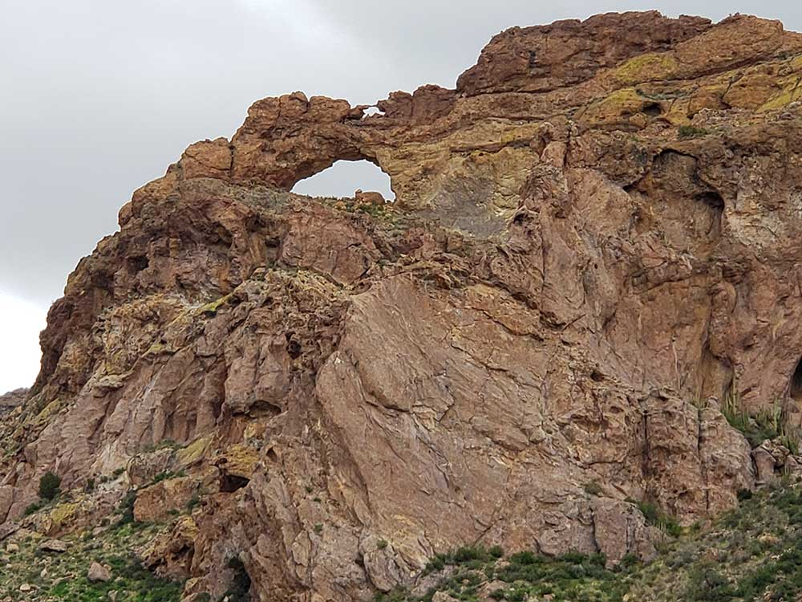
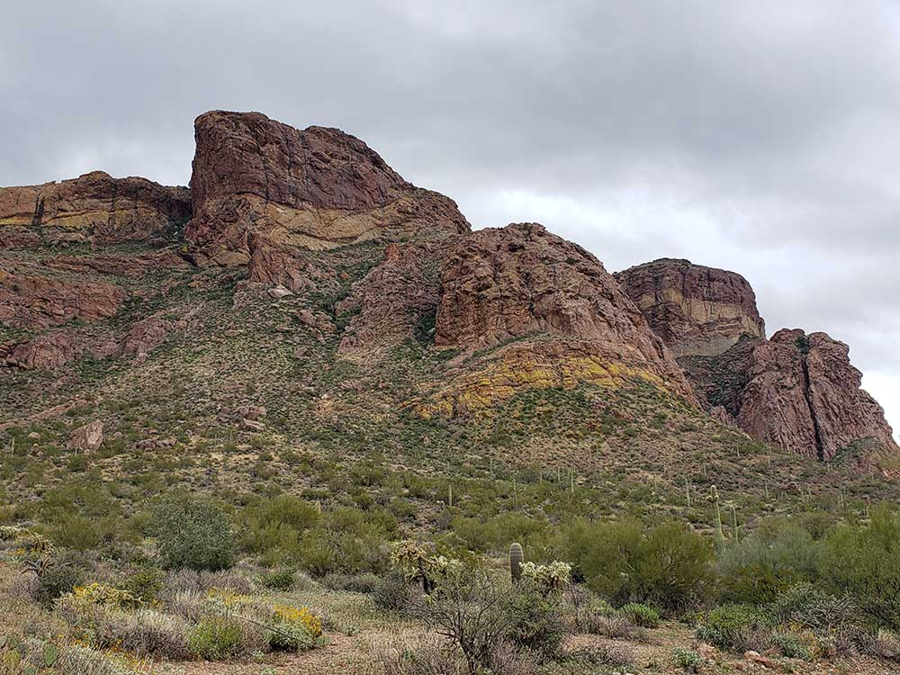
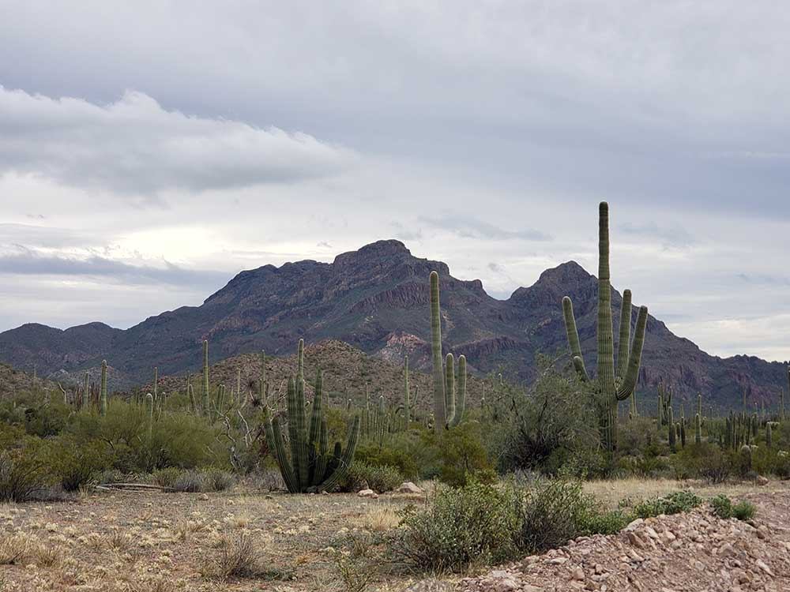

Expansive desert preserve featuring rare cacti, scenic drives, and rugged trails through the Sonoran Desert wilderness.
General Information
Kris Eggle Visitor Center: 8:00 AM – 5:00 PM daily
Closed: Thanksgiving Day and Christmas Day
Motorcycle: $20
Individual (on foot or bicycle): $15
Annual Pass: $45
Camping: $20 per night (Twin Peaks Campground)
Not permitted on trails or in the backcountry
Must be leashed (max 6 ft) and cleaned up after
How to Get There
From Tucson, AZ (130 mi): Take AZ-86 W to Why, then turn south on AZ-85 and follow signs to the Kris Eggle Visitor Center.
Overview
Organ Pipe Cactus National Monument protects more than 330,000 acres of pristine Sonoran Desert along the Arizona-Mexico border and is the only place in the United States where the organ pipe cactus grows wild in large numbers. The multi-armed cactus, common in Mexico, thrives here in a landscape of saguaros, cholla, ocotillo and rugged mountains. Established in 1937 and recognized as a UNESCO International Biosphere Reserve in 1976, the monument is also a place of deep cultural history, with Tohono O'odham connections and a rare desert oasis at Quitobaquito Springs. Visitors come for the scenic drives, wildflowers, desert hiking and exceptionally dark night skies in one of the least developed corners of the Sonoran Desert.
Access
The monument is in southwestern Arizona, about 130 miles southwest of Tucson and 140 miles southwest of Phoenix, reached by car on AZ-85 south of Why and Ajo. The Kris Eggle Visitor Center is at the highway just north of Lukeville on the Mexican border. The scenic 21-mile Ajo Mountain Drive and Puerto Blanco Drive are graded dirt roads that most passenger cars can handle in dry weather, but they may close after rain. It is a border area, so expect Border Patrol checkpoints, limited services and areas that are closed or restricted for safety.
Seasons
The best time to visit is from late fall through early spring, with March and April especially popular for blooming cacti and wildflowers. Summers are extremely hot, with temperatures often above 110 degrees, and activities should be limited to early mornings. Monsoon storms from July to September can bring flash floods and close dirt roads. Winter days are mild and nights cold, and the campground is busiest from January to April.
Things to Do
Experience the Only Place in the United States Where Organ Pipe Cactus Grows Naturally
Organ Pipe Cactus National Monument protects more than 330,000 acres of pristine Sonoran Desert wilderness along the Arizona-Mexico border. Recognized as a UNESCO International Biosphere Reserve, the monument is renowned for its extraordinary diversity of desert plants, stunning mountain landscapes, remote backcountry roads, and the unique organ pipe cactus, a species found naturally in the United States only within this region.
Discover the Sonoran Desert's Incredible Biodiversity
The monument contains one of the most biologically rich desert ecosystems in North America. Visitors can observe giant saguaros, organ pipe cacti, cholla forests, ocotillo, ironwood trees, and hundreds of other plant species that thrive in this remarkable desert environment.
Drive the Scenic Ajo Mountain Drive
One of the monument's most popular experiences is the Ajo Mountain Drive, a scenic route that traverses desert valleys, rugged mountains, cactus forests, and spectacular overlooks. The drive showcases many of the monument's most beautiful landscapes and provides excellent opportunities for wildlife viewing and photography.
Explore Historic Quitobaquito Springs
Quitobaquito Springs is a rare desert oasis that has supported human activity for thousands of years. The spring provides habitat for rare and endangered species while offering visitors an opportunity to experience one of the most unique natural features in the Sonoran Desert.
Enjoy Stargazing and Dark Skies
Because of its remote location and minimal light pollution, Organ Pipe Cactus National Monument is an exceptional destination for astronomy and night photography. Visitors can enjoy some of the darkest skies in the Southwest and outstanding views of the Milky Way.
Observe Desert Wildlife
The monument supports a wide variety of wildlife, including desert bighorn sheep, mule deer, coyotes, javelina, Gila monsters, roadrunners, hawks, owls, and numerous reptiles and migratory birds. Wildlife viewing is especially productive during cooler morning and evening hours.
Top Trails
Desert View Trail
Length: Approximately 1.2 miles loop
Elevation Gain: About 150 feet
Difficulty: Easy
This popular loop trail climbs to a scenic overlook with panoramic views of the Sonoran Desert, surrounding mountains, and extensive cactus forests. It is one of the best introductory hikes in the monument.
Bull Pasture Trail
Length: Approximately 3.2 miles round trip
Elevation Gain: About 700 feet
Difficulty: Moderate
One of the monument's most rewarding hikes, this trail ascends through rugged terrain to a scenic saddle overlooking the Ajo Mountains. Hikers enjoy spectacular desert vistas and opportunities to observe wildlife and native vegetation.
Victoria Mine Trail
Length: Approximately 4 miles round trip
Elevation Gain: Moderate
Difficulty: Moderate
This historic trail leads to the remains of the old Victoria Mine while passing through classic Sonoran Desert landscapes filled with organ pipe cacti, saguaros, and colorful rock formations.
Quitobaquito Trail
Length: Approximately 0.5 miles round trip
Elevation Gain: Minimal
Difficulty: Easy
This short interpretive trail provides access to Quitobaquito Springs, allowing visitors to experience a rare desert wetland habitat while learning about the area's cultural history, ecology, and conservation significance.
Visitor Centers
The Kris Eggle Visitor Center, near the monument's southern entrance, has exhibits on the Sonoran Desert, cultural history and border issues, a bookstore, restrooms, a desert plant garden and rangers who provide maps, current road conditions and safety information. A short nature trail begins near the center. The monument is open year-round and the visitor center closes on Thanksgiving and Christmas, so check the National Park Service website for hours and for ranger programs, which are offered mainly in the cooler months.
Camping and Lodging
The Twin Peaks Campground near the visitor center has tent and RV sites with restrooms and showers but no hookups, and reservations are recommended in winter. The primitive Alamo Campground offers a quieter setting. There is no lodging in the monument. Hotels, inns and restaurants are in Ajo, about 35 minutes north, and in the small border towns of Why and Lukeville. Gila Bend, Tucson and Phoenix offer more choices 1.5 to 2.5 hours away. Check each property's website for current availability.
Sources: National Park Service official Organ Pipe Cactus National Monument information, including details on the Ajo Mountain Drive, Quitobaquito Springs, hiking trails, wildlife viewing, desert ecosystems, camping, and visitor amenities.
https://www.nps.gov/orpi/index.htm
Additional information verified through National Park Service visitor resources covering the Desert View Trail, Bull Pasture Trail, Victoria Mine Trail, UNESCO Biosphere Reserve designation, Sonoran Desert ecology, and recreational opportunities throughout Organ Pipe Cactus National Monument.
https://www.nps.gov/orpi/planyourvisit/index.htm Additional information from the National Park Service.
This article uses material from the Wikipedia article "Organ Pipe Cactus National Monument", which is released under the Creative Commons Attribution-Share-Alike License 3.0



Natural Arch

Multicolored Rock Formation

Monument Landscape